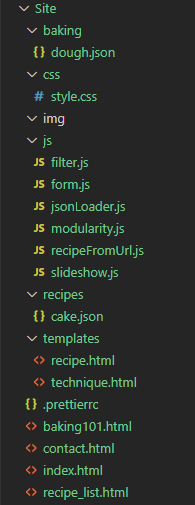

P2 - Gruppe 56
Andreas Realfsen Langnes, Inga Bertelsen, Jeeviga Gunathasan, Stian Gaustad, Tina Wedmark - 04/10/2020
Administrative detaljer
- Kient: Bestemor Borghild
- Kontaktperson: Fiktiv
- Type selskap: Fiktiv personlig bakeblogg
- Sidenavn: Bestemor Borghild's Bakebonanza
Hensikt, mål og målgruppe
Formålet er å vise frem og dele Borghilds familieoppskrifter med verden og inspirere leseren til å bake Borghilds berømte oppskrifter. Siden skal være enkel og intuitiv, så alle skal kunne navigere og få tilgang til hennes oppskrifter. Siden vil vise både Borghilds oppskrifter og oppskrifter sendt inn av andre brukere som Borghild har verifisert.
Hovedmålgruppen for siden er unge voksne som ikke har eller har liten tidligere erfaring med baking, spesielt de som ønsker å prøve gode gammeldagse oppskrifter.
Navigasjons-struktur
Navigasjonsstrukturen kan beskrives som clique-esque, og er illustrert i figur 1. Nav-baren på toppen sørger for at alle hovedsidene (index/hjemmesiden, kontakt, baketips og samlesiden for oppskrifter) er tilgjengelige med et klikk fra alle sider. Disse fire sammen kan beskrives som clique.
Baketips og oppskriftsiden er samlesider som brukes til å navigere videre til henholdsvis ulike baketips og oppskrifter. Det er slik da det ikke gir mening at hver enkelt oppskrift skal kunne være tilgjengelig fra alle sidene på websiden, spesielt når det blir mange ulike oppskrifter. Samtidig gjør det det lett og intuitivt å navigere seg videre fra samlesidene (ev å bruke dem som informasjon eller inspirasjon). Fra kontaktsiden vil du eksempelvis bevege deg via oppskriftssamlingen for å finne den spesifikke oppskriften du ser etter, mens fra den spesifikke oppskriften vil man derimot kunne gå rett til kontakt.
Strukturer som “Hub and Spoke” passer ikke da det ikke gir mening å alltid bli sendt tilbake til en “hub”. “Rooted Tree” kan til dels gi mening, som for de to “sub branchene” som ikke er koblet med hverandre, men ellers er det jo ikke røtter her - siden er tross alt relativt liten. Vi kalles det derfor for “Clique-esque”, fordi det tar utgangspunkt i en clique-struktur hvor alt er lett tilgjengelig, selv om det også kan minne om en liten variant av både “Rooted Tree” og “Network or Graph”.
Layout og utseende
Nettsiden er utformet med hovedfokus å introdusere brukerne til Borghild og hennes beste oppskrifter. Med hensyn til den unge målgruppen vår, er designet på nettsiden enkel, moderne og intuitiv. Brukeren vil få all nødvendig informasjon med én gang; en navigasjonsbar, en slideshow med de mest populære oppskriftene, mulighet til bedre kjent med Borghild og lenker til de beste oppskriftene. Navigasjonbaren på toppen gir en klar oversikt over innholdet på siden, og består av raske innganger til de resterende sidene. “Oppskrifter”-fanen gir rask tilgang til alle oppskrifter fra Borghild, samt innsendte oppskrifter fra brukere, “Baketips”-fanen er for brukerne som trenger spesifikke tips og triks for baking, og “Kontakt oss”-fanen, der brukerne kan kontakte Borghild via e-post eller sende inn en henvendelse.
Spesifisering av design for alle sider:
- Font: “Poppins Bold” for overskrifter, og “Poppins Regular” for body. Hovedtittelen er 56 px, underoverskrifter er 40 px, navigasjonbaren og body er 16 px.
-
Fargepalett:
- Tekst: Dark purple #4D3142, Dark pink #F09CA2
- Bakgrunn: White #FFFFFF, Minty green #C4D7D4, Light pink #FCE6DE, Sand #E3DCD1.
- Skygger: Kortene vil ha en lysegrå skygge ved on-load, og en mørkere grå ved hover.
- Body width: 960 px
- Lenker: Kortene vil være klikkbare lenker til vist oppskrift. Navigasjonbaren vil inneholde lenker til de resterende sidene. Logoen i hjørnet vil fungere som en lenke tilbake til landingssiden. Bildene i slideshowen vil fungere som lenker til tilsvarende oppskrift. Footeren inneholder en lenke til “Kontakt”-siden.
- Navigasjonsbar: Baren vil være plassert på toppen. Fanene vil få en understrek ved “hover”, og når en fane er klikket vil understreken forbli.
- Footer: Footeren inneholder logo og lenke til “Kontakt”-siden, dersom brukeren vil sende inn en henvendelse til Borghild.
- Logo: Logoen er plassert i øvre venstre hjørne, og består av to b-er for Bestemor Borghild som gir et rent og moderne uttrykk.
Layout og utseende
- Forside - index.html
-
Forsiden skal være den første siden som brukeren ser når de
besøker websiden. På forsiden vil brukeren bli vist bilder av
aktuelle oppskrifter, ikke alle oppskrifter på siden men et par
utvalgte. Denne siden skal fungere som en introduksjon, og har
derfor bare linker videre, i tillegg til store bilder og en liten
tekst som en introduksjon til Borghild. Eksempel på utforming:
- Oppskrifter - recipe_list.html
-
Dette vil være en liste med oppskrifter som er brukerens
forbindelse til bestemor Borghilds fantastiske oppskrifter. De vil
være listet opp som små, oversiktlige
«cards»
som en kan trykke på for å gå inn på hver enkelt oppskrift som en
side med mer utfyllende info.
- Spesifikk oppskrift - recipe.html
-
Dette vil være en side hvor det vises en oppskrift med mer
detaljer. Det vil være et stort bilde på toppen av siden som viser
frem hvordan sluttproduktet for oppskriften skal se ut. Det vil
være to kolonner med tekst. Til venstre er det en ingrediens
liste, denne listen er plassert på venstre side for å følge
etablerte normer for denne type bakeside og vi ikke ønsker å
forvirre våre lesere. I den andre kolonnen til høyre vil det være
en detaljert fremgangsmåte som forteller brukeren trinn for trinn
hvordan de skal gå frem.
- Baking 101 - baking101.html
-
En side ganske lik oppskrifter-siden. Denne vil ha noen eksempler
på kort (cards) med forskjellige temaer som kan være vanskelig for
de uerfarne leserne av borghilds side. Funksjonaliteten blir
ganske lik som oppskrifter, kort oppsummering av informasjon om
teknikken/ingrediensen på kortet og en
vanskelighetsgrad-indikator. Kortet vil linke til en side som
utdyper hvordan teknikken fungerer eller ingrediensen brukes.
- Baketeknikk - technique.html
-
Likt som spesifikk oppskrift-siden. Her vil mer detaljert
informasjon om de forskjellige teknikkene vises, enten som tekst,
bilde eller video. Denne informasjonen skal være relevant for de
andre bakeoppskriftene på websiden og hjelpe brukere som ikke har
kjennskap til de ulike bake teknikkene som benyttes. Siden
innholdet ikke er likt det vi finner for oppskriftene vil
baketeknikk siden bestå av tekst som forklarer teknikken på
venstre siden, med en tilhørende video eller bilde på høyre side
av teksten avhengig av teknikken og om det er nødvendig med video
for å forklare til brukeren.
- Kontakt - contact.html
-
Denne siden vil inneholde kontaktinformasjon (epost, ingen annen
kontaktinformasjon av hensyn til bestemor borghilds personvern),
et bilde av borghild, og en skjema som tillater brukere å sende
inn spørsmål eller oppskrifter hvis de ikke ønsker å bruke en
ekstern side eller program for å sende epost direkte.
Denne siden vil hjelpe for både innsending av oppskrifter men også for andre spørsmål til borghild fra de uerfarne bakerne som ser på siden og ikke forsto baking 101. Øverst på denne siden vil vi ha en kort tekst som forteller brukeren hva borghild kan hjelpe med og at de kan kontakte henne. På høyre siden av denne teksten vil vi se borghilds bilde igjen for [...].
Lenger ned på siden vil vi først se epost adressen til borghild som brukerne kan sende inn spørsmål eller oppskrifter til, og under eposten vil vi finne spørsmål/oppskrift skjemaet. Dette skjemaet vil ha flere felt, det første vil være en drop-down-menu hvor brukeren skal velge hvorfor de kontakter borghild. Videre vil det være en åpene tekstfelt hvor brukeren skal skrive inn meldings “tittel”, sitt navn, eposten sin så borghild kan svare brukeren, og deretter et større felt som kan ta inn selv spørsmålet eller oppskriften (“Din melding”).
Minimumskrav
- Stian og [...] vil implementere:
-
- Et script som håndterer innsending av spørsmål eller oppskrifter til bestemor borghild via forms. Her skal scriptet også validere input ved å bare sjekke om det står riktig type data i feltene, og om de er fylt ut i første omgang. Skriptet vil gi tilbakemelding på at informasjonen er sendt.
- Stian og [...] vil implementere:
-
- Et script som laster inn gjenbrukbar HTML dynamisk (but how?). Navigasjonsbar og footer vil gå igjen med samme kode for de ulike sidene, derfor er det hensiktsmessig å benytte javascript for å gjenskape disse elementene i stedet for å skrive den samme koden i hver fil.
- Tina og [...] vil implementere:
-
- Et script som henter bilder av utvalgte oppskrifter og plasserer dem på forsiden i en “karusell”. Å gi brukerne et visuelt inntrykk av borghilds fantastiske oppskrifter når de besøker siden vil øke brukerens interesse og vise bredden av borghilds bakeferdigheter. Brukere som blir fristet av et bildet kan klikke på bildet for å umiddelbart se hvordan de selv kan lage bestemor borghilds briljante bakverk.
- Andreas og [...] vil implementere:
-
- Et script som tillater brukeren å filtrere innholdet i oppskrift listen basert på om de ønsker å se bare bestemor borghilds oppskrifter, bruker innsendte oppskrifter eller begge. Bruk av dette filteret vil hjelpe brukeren å velge innholdet de ønsker fra siden og begrenser antall oppskrifter hvis de blir overveldet av mengden oppskrifter.
Plan
Til høyre kan en se filstrukturen i prosjektet:
| Filnavn | Beskrivelse | Ansvarlig | Deadline |
|---|---|---|---|
| index.html | HTML for hoved-nettsiden, tekst og bilder | Inga | |
| recipe.html | HTML-mal for en enkel oppskrift, med informasjon hentet inn fra JSON-fil. | Andreas | |
| recipe_list.html | HTML for oppskrifter, vist som kort med bilde og beskrivelse. | Inga | |
| baking101.html | HTML for liste over grunnleggende baketeknikker, vist som kort med bilde og beskrivelse. | Tina | |
| technique.html | HTML-mal for teknikker i Baking 101, med data hentet inn fra JSON-fil. | Andreas | |
| contact.html | HTML med skjema for å kontakte Borghild | Stian | |
| style.css | CSS for design av HTML-filene | Alle/Jeeviga | |
| form.js | Script for innsending av forms (oppskrifter/meldinger) | Stian | |
| jsonLoader.js | Script for å laste inn json-data og putte det inn i template | Andreas | |
| modularity.js | Script for å dynamisk laste inn gjenbrukbar HTML | Stian | |
| loadFromUrl.js | Kjører jsonLoader på en url for å hente inn riktig fil | Andreas | |
| slideshow.js | Karusell på hovedsiden som veksler mellom bilder | Tina | |
| {x}.json | JSON-fil med innholds-data. Disse er navngitt etter innholdet, og er her mesteparten av innholdet ligger. Enhver oppksrift og baketeknikk er derfor lagret i en JSON-fil hvor innholdet er dataen som vises for brukeren. Det kan for eksempel være "sjokoladekake.json", hvor oppskriften da ligger i denne filen. | Alle(?) | |
| filter.js | Script som filtrerer hvilke oppskrifter som lastes inn | Andreas |